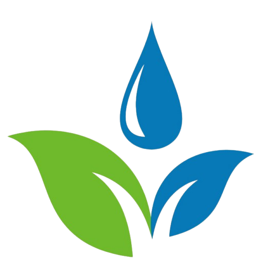
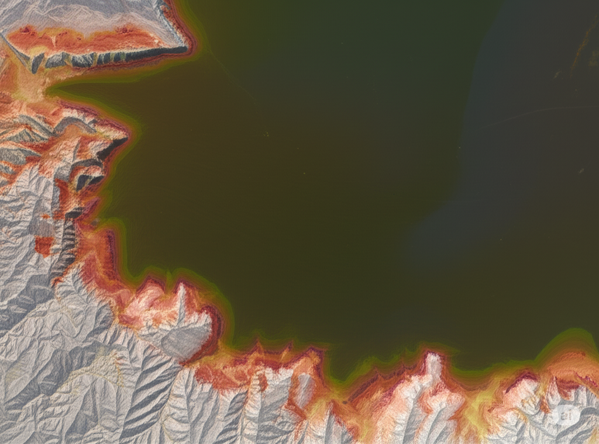
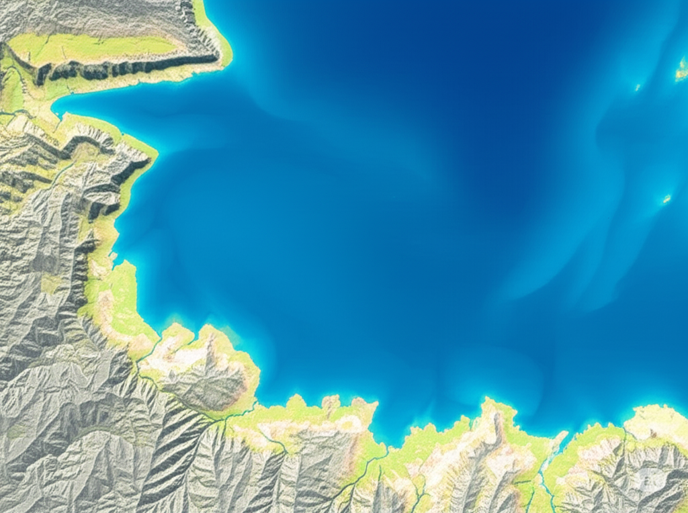

EcoGrid
Home
Map
Album
Stories
Plans
Feedback
Letter
🗺️ Interactive Transformation Map
“From Floodplain to Floating Futures”
2025 View

🐟
Bayog Aquafarm Hub
Aquaculture innovation & community jobs
🛶
San Pedro Floating Market
Commerce on water, local produce
2050 View

🌱
Calamba Wetland Park
Hybrid parks, eco-tourism, flood buffer
🎓
Youth Design Studio
Legacy co-design program
Transformation Pin
2025
: Informal settlements, urban flooding, degraded fisheries
2050
: Floating markets, hybrid parks, aquaponics zones, buffer mangroves